Нейросетевые инструменты в работе моушн-дизайнера
Генератор может дать красивый кадр, но для ролика нужно решить, что произойдёт до него и после. В этой лекции пройдём путь от идеи и раскадровки до опорных изображений, движения, апскейла и монтажа. Начнём с готовой работы, затем разберём, какие решения помогают собрать отдельные генерации в историю.
В The Frost команда Waymark соединяет сгенерированные сцены в фантастическую историю. Посмотрите небольшой эпизод в начале и вернитесь к фильму после раздела о монтаже. Проследите, сколько информации дают звук, паузы и смена крупности, а какие детали действительно движутся внутри кадра.
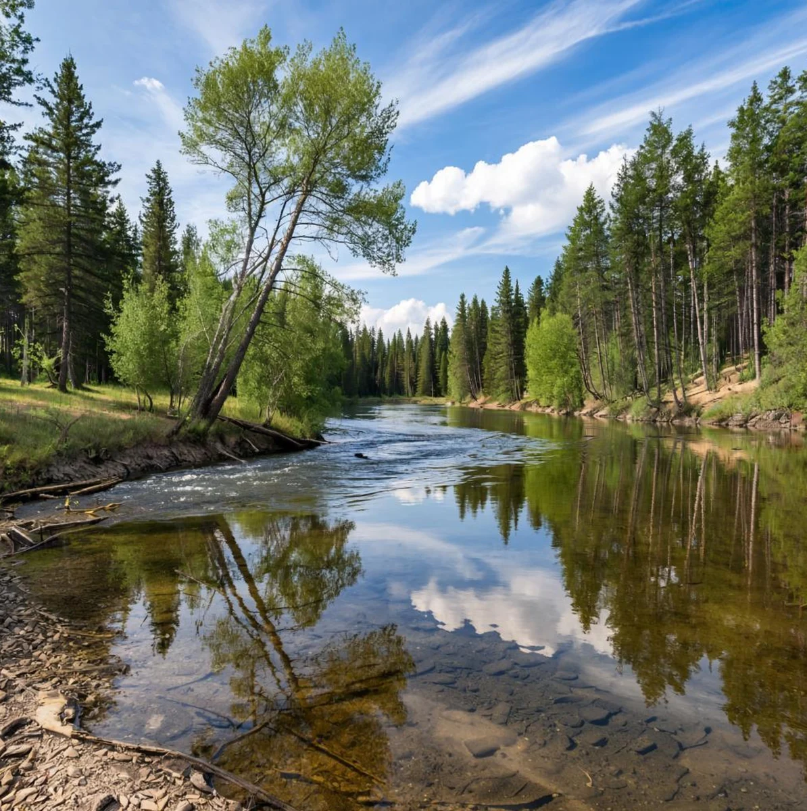
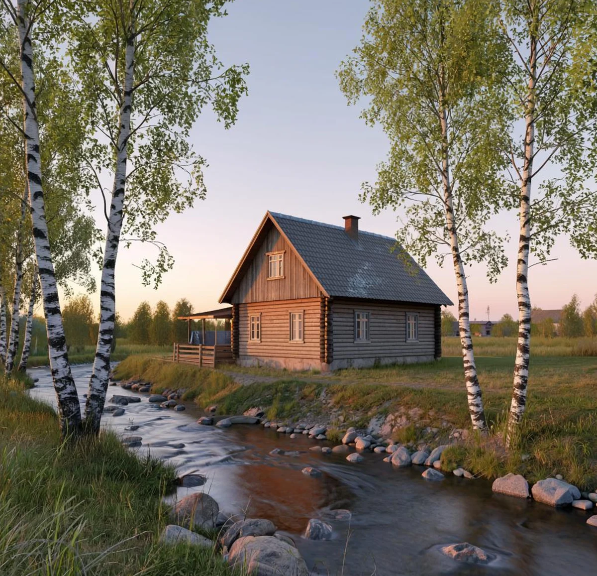
Это два результата разных запросов из статьи Сбера. В первом изображении внимание уходит вдоль воды в глубину, во втором дом становится главным объектом, а свет задаёт время суток. Чтобы анимировать такую сцену, сначала решите, что должно двигаться. Для спокойного пейзажа можно оставить камеру неподвижной и оживить только воду и листву. Для истории про дом важнее сохранить его конструкцию, чем добавить сразу несколько эффектов.
Предположим, мы делаем двенадцатисекундный ролик для настольной лампы. В начале виден холодный пустой стол, затем включается свет, и пространство становится обжитым. Финал удерживает продукт и короткую фразу. Смысл сцены можно сформулировать как переход от отчуждения к уюту. Это решение определяет палитру, пластику света, крупности, длительность паузы и характер звука.
- Бриф и идея
- Сценарий и раскадровка
- Стиль и опорные кадры
- Аниматик
- Генерация отдельных планов
- Монтаж и композитинг
- Улучшение выбранных фрагментов
- Звук, титры и экспорт
К этой последовательности возвращаются несколько раз. Если движению не хватает места, правят исходный кадр. Если план не стыкуется с соседним, меняют ракурс или длительность. При этом полезно различать изменение замысла и исправление технического дефекта. Иначе удачный случайный результат начинает определять весь проект, а команда теряет первоначальную задачу.
Генерация бывает основной техникой производства, источником отдельных слоёв или способом быстро проверить направление. Для одного ролика достаточно сгенерировать фон и атмосферу, а продукт снять или отрендерить в 3D. В другом можно собрать последовательность из сгенерированных сцен. В третьем генератор нужен только для раскадровки, а финальное движение полностью создаётся вручную.
Начинать удобно с карты ответственности. Какие части должны быть точными? Обычно это форма продукта, логотип, текст, обязательная информация и ключевой жест персонажа. Где допустима вариативность? Фоновые фактуры, абстрактные переходы, атмосферные детали и варианты освещения часто дают больше свободы. Чем строже требования к элементу, тем важнее заранее выбрать способ его контроля.
Чатбот как участник препродакшна
Текстовые ассистенты, например ChatGPT, Claude или Gemini, могут помогать структурировать бриф, предлагать сценарные направления, разбивать действие на планы, формулировать вопросы заказчику и описывать ограничения. Результат зависит от исходных данных. Запрос «придумай красивый ролик» оставляет почти все решения модели. Подробный контекст позволяет получить материал, который можно обсуждать и редактировать.
В запрос стоит включить продукт, аудиторию, носитель, длительность, сообщение, тон, обязательные элементы и производственные ограничения. Укажите, что уже есть у команды: фотографии продукта, модель, фирменные шрифты, записи голоса, музыка или примеры прошлых работ. Если утверждённого текста пока нет, отделите рабочие формулировки от обязательной информации.
Мы делаем ролик настольной лампы длительностью 12 секунд для вертикального экрана. Аудитория работает и учится дома. Нужно показать, как локальный свет меняет ощущение рабочего места. У нас есть фотографии лампы и логотип. Предложи три разных сценарных направления. Для каждого опиши изменение состояния, четыре плана и основной производственный риск. Избегай неподтверждённых обещаний о свойствах продукта.
Сравнивайте варианты по конкретным основаниям. Есть ли действие, которое считывается без объяснения? Понятен ли продукт до финального логотипа? Хватит ли времени на изменение состояния? Можно ли получить нужный контакт руки с предметом? Ассистент может предложить эффектный сценарий, производство которого окажется неоправданно сложным для небольшой работы.
Для лампы можно выбрать три направления. Первое строится на превращении пространства светом. Второе показывает свет как маршрут для внимания: пятно последовательно открывает предметы. Третье делает героем материал: блики и тени постепенно раскрывают форму корпуса. У каждого направления свои требования к кадрам, поэтому полезно выбрать одно до генерации большой подборки.
Попросите чатбота разложить выбранное направление на наблюдаемые действия. Формулировку «становится уютно» нужно перевести в изображение. Например, холодный общий план сменяется более близким, тёплая область света выделяет книгу, рука останавливается на странице, появляется спокойная финальная композиция. Это уже можно проверить в раскадровке.
Отдельный проход посвящают критике. Попросите найти причинные разрывы, слишком похожие планы, лишние метафоры и места, где сообщение держится только на закадровом тексте. Затем сами решите, какие замечания относятся к задаче. Убедительная формулировка ассистента ещё не подтверждает, что зритель прочитает сцену таким же образом.
Таблица кадров связывает художественное решение с производством. В неё полезно включить номер, хронометраж, крупность, действие, камеру, звук, исходные материалы и способ создания. Один план должен иметь ясную функцию. Если невозможно объяснить, зачем он нужен, вероятно, его стоит объединить с другим или заменить.
| Кадр | Время | Изображение и действие | Производство |
|---|---|---|---|
| 01 | 0–3 с | Общий план стола. Лампа выключена, композиция спокойная | Опорный кадр и короткая атмосферная анимация |
| 02 | 3–5 с | Деталь выключателя. Появляется свет | Съёмка или 3D для точного действия, отдельный световой слой |
| 03 | 5–9 с | Средний план. Свет выделяет книгу и материал стола | Image-to-video с небольшим движением камеры |
| 04 | 9–12 с | Продукт, логотип и фраза. Пауза на чтение | Точный продуктовый слой и типографика в AE |
Ниже четыре сгенерированных опорных кадра к таблице. Сначала видим место целиком, затем приближаемся к выключателю, замечаем изменение света и оставляем время на продуктовый финал. Подписи связывают кадры с экспликацией. Так легче проверить, что именно предстоит получить в генераторе, снять или собрать в AE.

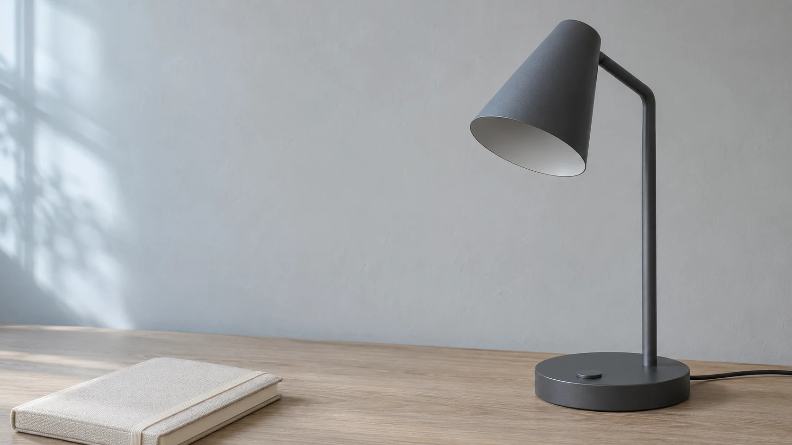

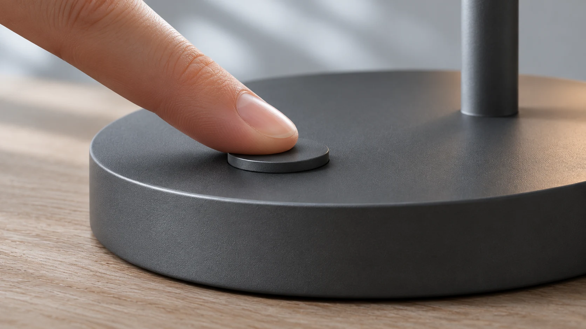

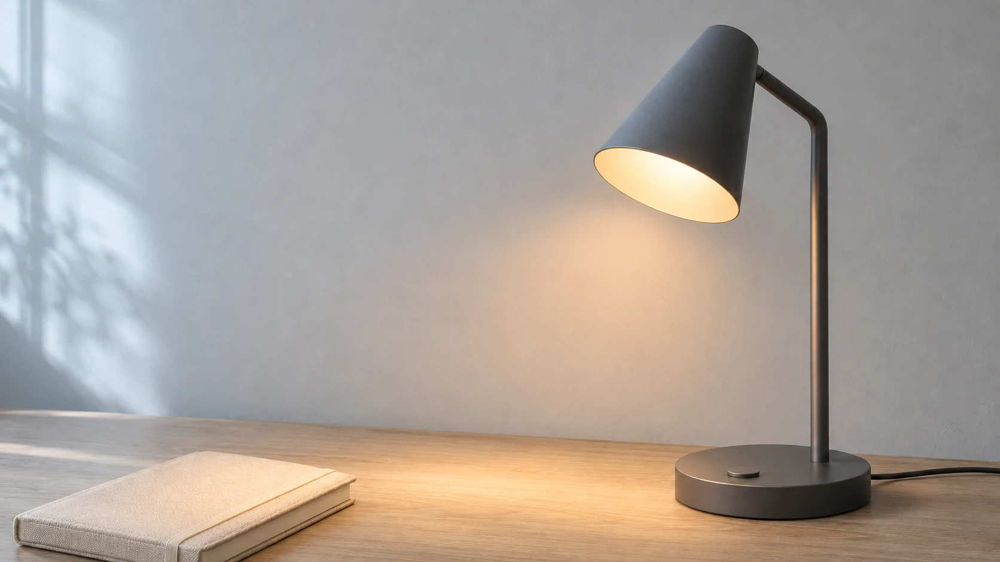

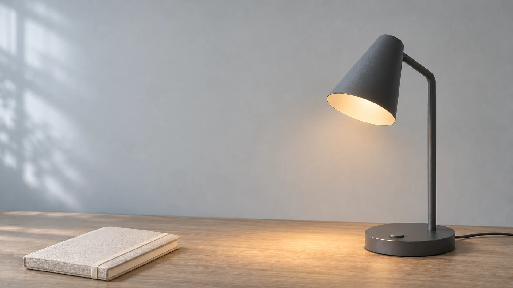
Это статичные изображения для проверки замысла, не кадры готового видео. В генерациях слегка различаются детали корпуса и положения предметов. Для точного рекламного продукта понадобится единый контролируемый слой, съёмка или 3D. Логотип и надпись добавляются отдельно в AE.
Вернёмся к лампе. Чатбот предлагает сделать так, чтобы она превратилась в цветок. Это яркая метафора, но в брифе важно показать сам продукт. Можно сохранить ощущение раскрытия иначе: свет постепенно проявляет книгу и край стола, а корпус остаётся узнаваемым. В сценарии меняем наблюдаемое действие, затем заново проверяем его в раскадровке.
Чатбот может подготовить черновик таблицы, но длительность проверяется монтажом. Прочитайте фразу вслух, соберите статичные кадры на таймлайне и добавьте временный звук. Такой аниматик выявляет проблемы раньше, чем начнётся дорогая генерация видео. Подробнее сценарий и экспликацию мы разбирали в лекции об основах драматургии.
Где попробовать генерацию бесплатно
Для первых тестов можно обойтись бесплатными лимитами. Сервисы называют их кредитами, токенами или попытками. Здесь это единицы расходования генераций внутри конкретной платформы. Длинное видео, большая картинка и отдельные модели могут тратить разное количество единиц. Условия ниже проверены 9 ноября 2026 года, доступный остаток смотрите в своём аккаунте.
| Сервис | Что попробовать для курса | Бесплатный старт |
|---|---|---|
| GigaChat и Kandinsky | Обсудить сценарий по-русски, подготовить изображения и попробовать анимацию. Kandinsky отвечает за визуальную генерацию в экосистеме Сбера | В официальной справке заявлена бесплатная работа. Возможности и ограничения уточняются после входа. Примеры запросов и результатов |
| Leonardo.Ai | Найти внешний вид предмета, окружение и варианты персонажа. Затем сравнить несколько опорных кадров | Ежедневный бесплатный лимит токенов. Доступность моделей и стоимость операции зависят от выбранного режима. Условия бесплатного уровня |
| Ideogram | Пробовать графические композиции и варианты изображения с надписями. Точный текст всё равно проверить и собрать в финальном макете | Подходящие под условия бесплатные аккаунты получают еженедельные кредиты при входе через Google, Apple или Microsoft. Размер выдачи может различаться. Тарифы и условия |
| Adobe Firefly | Сопоставить исходную картинку и движение, попробовать первый кадр и короткий атмосферный план | Ограниченное число бесплатных генераций в день на доступном наборе моделей. Справка о генеративных кредитах |
| Pika | Сделать несколько коротких тестов движения и сравнить расход лимита с длиной полезного фрагмента | В FAQ указан бесплатный Basic с 150 кредитами в месяц. Доступные режимы и расход смотрите перед запуском. Условия Pika |
| Runway | Попробовать image-to-video, если пробный баланс доступен в аккаунте | Free описан как разовая выдача 125 кредитов без обновления. Отдельная справка предупреждает, что бесплатные кредиты выдаются не всем аккаунтам. Free · Проверка выдачи |
Для первых тестов достаточно одного короткого фрагмента. Например, можно подготовить кадр лампы в Kandinsky или Leonardo, а затем анимировать его в доступном видеосервисе. Сначала выясните, сколько стоит одна попытка и можно ли скачать результат. Если бесплатный режим публикует изображения в общей галерее, для теста подойдут собственные эскизы и фотографии.
Сначала изображение, затем движение
Подход image-first особенно удобен там, где важны точная композиция и общий стиль серии. Сначала создают и утверждают изображения, которые показывают ключевые состояния. Затем из них получают короткие видеопланы. Это позволяет отдельно оценить художественное решение и поведение сцены во времени.
Опорный кадр, или styleframe, показывает вид будущего изображения: композицию, материал, свет, палитру и фактуру. Кадр раскадровки отвечает прежде всего за действие и последовательность. Эти документы могут выглядеть по-разному. Грубый рисунок хорошо объясняет сцену, а тщательно собранный styleframe помогает согласовать её внешний вид.
Начните с одного кадра, который лучше всего выражает идею. После выбора направления подготовьте соседние планы, сохраняя характер света, материалы и пропорции предметов. Используйте собственные фотографии и эскизы как визуальные опоры там, где инструмент поддерживает такой ввод. В изображениях заранее оставляйте место для титров и учитывайте обрезку под формат.
При работе с генератором изображений проверяйте контуры продукта, контакт с поверхностью, отражения, мелкие предметы и перспективу. Дефект, который кажется малозаметным в статике, может привлечь внимание при движении. Полезно сначала устранить ошибку локальным редактированием или в Photoshop, затем анимировать исправленный кадр.
В инструментах, которые поддерживают редактирование загруженного изображения, удобно менять фон, отдельный предмет или свет по очереди. После каждой правки сравнивайте результат с утверждённым вариантом: изменения могут затронуть соседнюю область. Сохраняйте исходник и промежуточные версии. Пример возможностей редактирования изображений в ChatGPT.
Text-to-image → image-to-video. Подходит для поиска образа и его последующей анимации. Основная работа начинается с отбора изображения и согласования соседних кадров.
Фотография продукта → генеративное окружение → композитинг. Позволяет сохранить утверждённый предмет и искать вариативные фоны. Важно согласовать перспективу, свет, отражения и контактную тень между слоями.
3D-блокинг → изображение → видео. Простая сцена задаёт ракурс, положение объектов и масштаб. Её можно использовать как визуальную основу, когда словесного описания недостаточно. Генеративная обработка может изменить детали геометрии, поэтому точные элементы проверяют отдельно.
Video-to-video. Исходная съёмка или анимация задаёт движение. Этот подход полезен, когда важны темп, пластика и последовательность действия. При стилизации следите, чтобы новый внешний вид не разрушал силуэт и связи между частями объекта.
Text-to-video. Удобен для эскизов движения, атмосферных вставок и сцен с высокой свободой интерпретации. Для точного продуктового плана сравните его с подходом, в котором уже есть утверждённое изображение.
Если инструмент принимает начальный и конечный кадры, они задают два состояния сцены. Между ними всё равно нужно описать действие. Убедитесь, что формы и ракурсы допускают переход. Два изображения с сильно различающимися предметами могут привести к непредусмотренному превращению вместо обычного движения.
В Firefly доступна генерация с изображениями в качестве первого или последнего кадра. Набор совместимых управляющих настроек зависит от выбранной модели. Перед серией проверьте конкретный режим интерфейса. Работа с опорными кадрами в Adobe Firefly.
Для нашей лампы можно подготовить два одинаковых по композиции состояния с выключенным и включённым светом. Но если важен точный момент нажатия, полезнее сохранить действие отдельным управляемым слоем. Тогда генерации достаётся изменение атмосферы, а монтаж определяет, когда именно происходит событие.

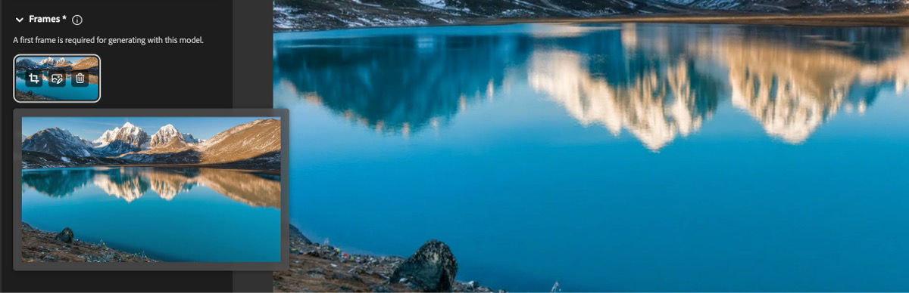
Знание планов, ракурсов, направления света и движения камеры помогает сформулировать проверяемый запрос. Вспомните лекцию «Композиция и монтаж». Укажите, что является главным, где оно находится, что остаётся свободным и как зритель должен переводить внимание внутри кадра.
| Решение | Что описать | Пример для лампы |
|---|---|---|
| Крупность | Какую часть объекта видим | Деталь выключателя или общий вид рабочего места |
| Ракурс | Положение камеры относительно предмета | На уровне поверхности стола, под небольшим углом сбоку |
| Композиция | Главный элемент, баланс и свободная область | Лампа справа, слева место для короткого заголовка |
| Глубина | Передний и дальний планы, перекрытия | Край книги ближе к камере, стена в глубине |
| Свет | Направление, размер и характер источника | Мягкий боковой свет и тёплое локальное пятно |
| Движение | Что перемещается, куда и с каким темпом | Медленный боковой проезд, лампа сохраняет положение |
Предметный кадр настольной лампы на светлом деревянном столе. Средний план, камера на высоте столешницы под небольшим углом сбоку. Лампа занимает правую треть, слева свободная область для заголовка. На переднем плане край закрытой книги. Мягкий холодный свет из окна, матовый корпус, спокойная приглушённая палитра. Горизонтальная композиция для опорного кадра; вертикальный формат потребует отдельного кадрирования.
Здесь каждое описание связано с видимым решением. Слова «премиально», «кинематографично» или «эпично» могут дополнить настроение, но для обсуждения полезнее описать размер источника света, контраст, фактуру и распределение пространства. Запрос должен помогать сравнить результат с замыслом.
Камера медленно перемещается вправо параллельно столу. Лампа и книга неподвижны. Тёплое пятно света плавно расширяется по поверхности. Движение спокойное и непрерывное, без смены кадра.
Для image-to-video изображение уже задаёт значительную часть внешнего вида сцены. В тексте удобно сосредоточиться на действии и камере. В руководстве Runway можно сравнить исходные изображения с анимированными результатами и соответствующими запросами. Галерея примеров image-to-video с промптами.
При наезде камера приближается к сцене, поэтому меняются отношения между ближними и дальними объектами. Зум меняет поле зрения из одной позиции. Облёт раскрывает предмет с разных сторон. Генератор может интерпретировать запрос приблизительно, поэтому оценивать нужно полученное изображение: сохранились ли форма предмета и ожидаемая перспектива?
Если боковая сторона лампы важна для узнавания модели, большой облёт требует сведений о ней. Один фронтальный кадр не показывает скрытые поверхности. Можно подготовить дополнительные виды, использовать реальную модель или выбрать более сдержанное движение камеры. Так постановка кадра учитывает доступные исходные данные.
Не перегружайте один короткий план несколькими независимыми событиями. Наезд, поворот лампы, нажатие рукой, появление книги и превращение фона сложнее контролировать одновременно. Сначала проверьте основное действие, затем добавляйте второстепенное. Меняя один значимый параметр за проход, проще понять причину результата.
ComfyUI и генерация на своём компьютере
Готовую схему удобно искать в Templates: в боковой панели или через Workflow → Browse Workflow Templates. Выбирайте шаблон по задаче, затем проверяйте модель и способ выполнения. Пометка API означает обращение к внешнему сервису, поэтому такой шаблон не равен бесплатной генерации на своём компьютере.

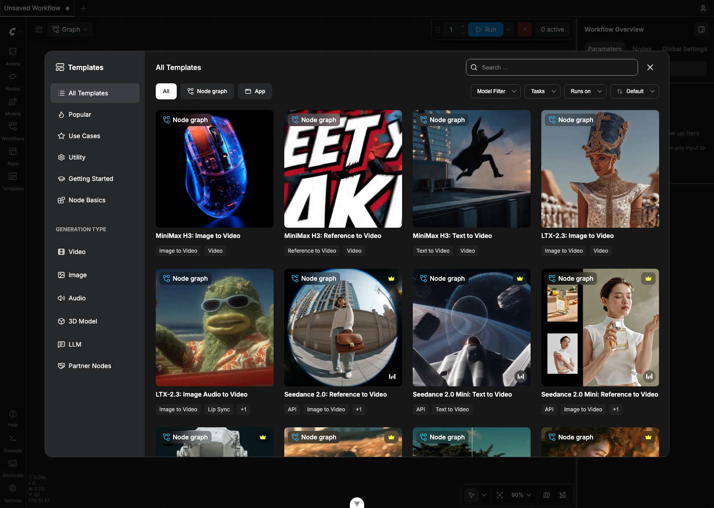
После загрузки шаблона проверьте входные изображения, промпт и загрузчики моделей. Если файлов не хватает, ComfyUI показывает Missing Models. Это перечень зависимостей конкретной схемы. На скриншоте видны разные типы файлов и их размеры: загружать все модели подряд для первого теста не требуется.

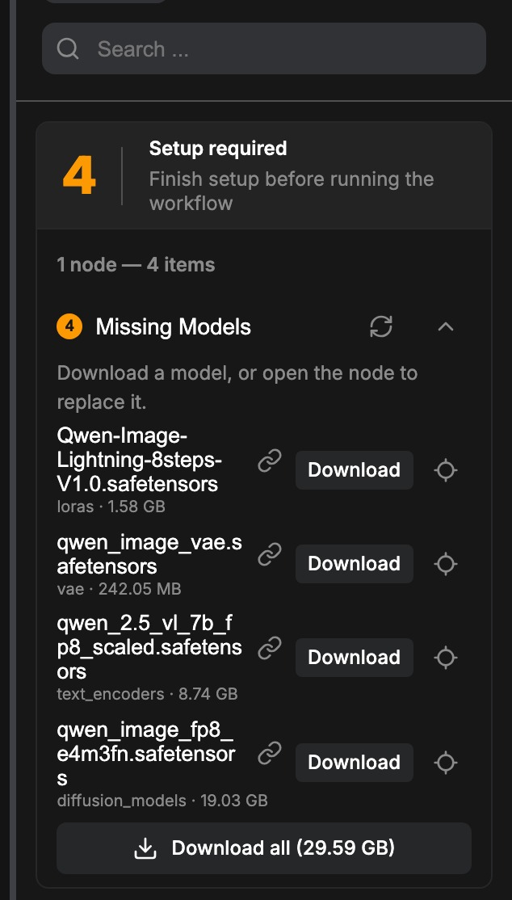
В облачном сервисе мы выбираем режим, загружаем исходник и получаем результат. В ComfyUI можно собрать тот же процесс из отдельных узлов и запустить модели локально. Один узел загружает модель, другой принимает текст, следующий выполняет вычисления, затем результат превращается в изображение и сохраняется. Схема называется workflow. По устройству она знакома тем, кто работал с TouchDesigner или Geometry Nodes.
Для примера с лампой можно подготовить локальную цепочку, которая генерирует варианты фона, затем подать выбранную картинку в отдельный процесс анимации. При повторной работе сохраняются расположение узлов, выбранные модели и параметры. Это особенно удобно, когда нужно сделать серию похожих кадров и понимать, какая стадия отвечает за каждое изменение.
- Load Checkpoint
Модель, CLIP и VAE - CLIP Text Encode
Текст становится условием генерации - Empty Latent Image
Размер исходного латента - KSampler
Вычисление по модели и условиям - VAE Decode
Преобразование латента в картинку - Save Image
Просмотр и сохранение
В этой схеме у KSampler сходятся три ветки: модель, текстовые условия и латент. В базовом примере Stable Diffusion предусмотрены положительный и отрицательный промпты. После вычисления VAE Decode возвращает обычное изображение. У других семейств моделей состав узлов может отличаться, поэтому готовую схему выбирают под конкретную модель. Официальный разбор первой генерации.

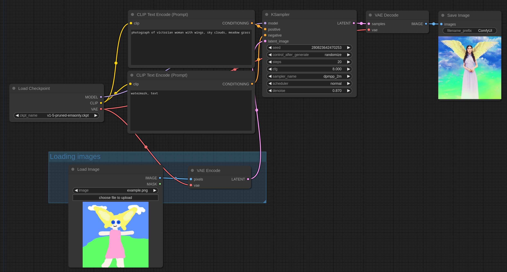
На примере видно, как грубый рисунок задаёт расположение фигуры, крыльев и фона. В img2img загруженное изображение сначала кодируется через VAE Encode. Параметр denoise влияет на степень вмешательства. Его уменьшение обычно сильнее сохраняет исходник. Это удобно для перехода от эскиза к более проработанному кадру, но один параметр не заменяет проверку композиции и формы.
Для локальной работы нужны установленные ComfyUI, файлы моделей, место на диске и подходящее оборудование. Требования зависят от модели, размера изображения, количества кадров и используемых оптимизаций. Видеогенерация обычно заметно тяжелее одиночной картинки. При нехватке VRAM начните с меньшего разрешения и короткого теста, а конкретную совместимость сверяйте с документацией модели. Установка Comfy Desktop на Windows.
Локальный расчёт использует ресурсы своего компьютера. У API- и Partner Nodes запрос уходит внешнему провайдеру и может оплачиваться отдельно. Поэтому открытый на своём компьютере интерфейс ещё не определяет, где вычисляется конкретная ветка. Перед работой найдите узел генерации и проверьте, загружает ли он локальный файл модели или обращается к сервису.
Начать можно с официального примера и его исходных файлов. В каталоге есть img2img, inpainting, апскейл и видеопроцессы. Изображения с сохранёнными метаданными workflow можно загрузить в ComfyUI, чтобы восстановить схему. Модели и дополнительные узлы при этом должны присутствовать в установленной среде. Каталог примеров ComfyUI.
Для моушн-дизайнера первый полезный опыт может быть небольшим. Загрузите готовый процесс генерации изображений, измените текст и размер, затем сохраните выбранный кадр для анимации. Когда станет понятно, где находятся исходник, условия, вычисление и сохранение, можно добавлять маски, управление композицией и видеомодель. На этом этапе удобнее сравнивать два варианта одной сцены, чем сразу собирать универсальную схему для всех задач.
Генерируем планы, из которых можно собрать монтаж
Единицей производства удобно сделать отдельный план с ясным началом и завершением. Генерация длинного непрерывного фрагмента затрудняет локальные правки. Короткие планы дают возможность выбирать удачные части, менять порядок и управлять темпом. Их длительность определяется действием и задачей ролика.
На монтаже нужны дополнительные кадры вокруг полезного события. Если нужный жест возникает в последний момент, склейку будет трудно поставить после него. При выборе дубля оценивайте не только красивую середину, но и возможность входа и выхода. Начальная статичная пауза тоже может быть полезна, если даёт зрителю время рассмотреть продукт.
Для сцены включения лампы полезно иметь момент до появления света, само изменение и небольшую паузу после. Если генератор постоянно начинает действие сразу, попробуйте разделить планы или получить отдельный спокойный фон, который позволит расширить начало в композитинге.
Схема монтажного запаса. Не обрезайте генерацию сразу по событию: спокойные участки по краям позволяют выбрать момент склейки. Их длина зависит от темпа ролика.
При склейке детали с общим планом проверьте форму кнопки, материал корпуса и направление света. Крупный план объясняет действие, общий показывает результат. Сначала соедините эти состояния в аниматике, затем выбирайте движение для каждого плана.
Подготовьте визуальный паспорт. Зафиксируйте пропорции продукта, ключевые цвета, материал корпуса, характер света, фон и допустимую фактуру. Для персонажа добавьте силуэт, одежду и отличительные детали. Для каждой новой сцены сравнивайте результат с этим паспортом, а не только с предыдущей генерацией.
Референс внешнего вида, первый кадр и референс движения выполняют разные задачи. Изображение может задавать персонажа или композицию, а видео показывать пластику движения. Какие именно данные учитывает инструмент, зависит от модели и режима. Проверяйте выбранный рабочий процесс на одном тестовом плане до производства всей серии.
Одинаковый seed может помочь воспроизвести конкретный вариант в некоторых инструментах, но не гарантирует одинаковую геометрию героя во всех сценах. Условия воспроизведения зависят от версии модели и параметров. Поэтому сохраняйте также реальные исходные файлы, название режима и настройки каждого принятого дубля.
Сравните несколько сервисов на одной задаче. Дайте одинаковый исходный кадр и близкое описание движения. Смотрите, как сохраняется форма продукта, насколько управляемо движение, сколько полезных секунд получилось и легко ли исправить результат. Оцените экспорт, разрешение, формат, наличие звука, доступные опоры и стоимость удачного плана.
Для знакомства можно рассмотреть Runway и Adobe Firefly, а затем сравнить с другими доступными видеогенераторами. При выборе важнее совпадение с задачей, чем место инструмента в рекламном рейтинге. Состав моделей, лимиты и стоимость регулярно меняются, поэтому перед работой проверяйте текущие условия выбранного сервиса.
В облачных инструментах часть подготовки и вычислений организована сервисом. Локальный или узловой процесс, например в ComfyUI, позволяет подробнее видеть последовательность обработки и сохранять её как рабочую схему. При этом придётся согласовать модели, память видеокарты, зависимости и лицензии. Для первых тестов удобнее собрать короткую понятную цепочку, а затем постепенно добавлять новые стадии.
Удачный кадр должен работать внутри ролика. Составьте контактный лист опорных изображений и черновую монтажную последовательность. Сразу становятся заметны различия в цвете корпуса, размере лампы, высоте камеры и плотности деталей. На отдельных красивых стоп-кадрах эти расхождения легко пропустить.
Просмотрите клип в обычном темпе, затем покадрово в местах действия и склеек. Проверьте силуэт, количество деталей, отражения и поведение материала. Проследите, как объект входит в перекрытие и выходит из него. Рука за лампой, тонкая ножка, шнур и прозрачная поверхность часто требуют особого внимания. Проверяйте также начало и конец, где иногда появляются внезапные деформации.
Отделяйте нестабильность геометрии от изменения света. Блик может перемещаться по поверхности при движении камеры, а корпус должен сохранять конструкцию. Если ножка меняет толщину или выключатель оказывается в другом месте, проблема относится к предмету. Усиление резкости такой дефект не исправит.
Если смысл и действие верны, а ошибка занимает небольшую область, можно рассмотреть локальную замену, маску или ретушь. Если не работает основной жест, меняется конструкция предмета или нарушается связь между планами, проще вернуться к опорному изображению либо сменить способ производства. Иногда достаточно сократить движение камеры.
Сохраняйте варианты с понятными именами, например lamp_sh03_moveB_v04. В журнале отметьте исходный кадр, инструмент, промпт, настройки и причину принятия или отказа. Стоимость полезно считать по готовым принятым секундам вместе со временем отбора и исправлений. Большое число генераций само по себе не означает, что проект движется к завершению.
Апскейл и улучшение материала

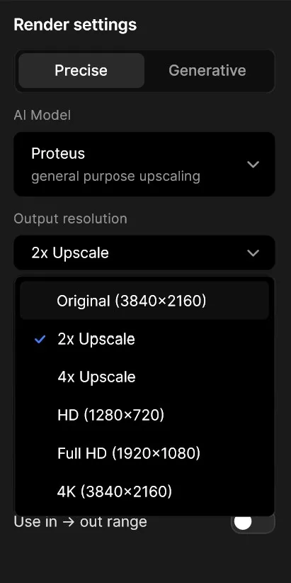
Апскейл увеличивает разрешение изображения. Генеративное улучшение может также синтезировать детали, менять локальную резкость, уменьшать шум и влиять на восприятие фактуры. Поэтому результат оценивают как новую версию материала. Увеличенный размер файла ещё не подтверждает, что в нём сохранился нужный дизайн.
Topaz Video, который также встречается в материалах под названием Video AI, предлагает инструменты увеличения разрешения, шумоподавления, стабилизации и интерполяции. Это разные операции с разными целями. Выбирайте конкретную задачу для каждого прохода. Официальный обзор Topaz Video.
Опорное изображение стоит подготовить перед анимацией, если его качества не хватает для выбранного режима ввода. Видеопланы разумно улучшать после предварительного отбора. Так ресурсы уходят на материал, который действительно войдёт в ролик. Оставляйте монтажный запас вокруг выбранного участка, чтобы после обработки сохранить свободу склейки.
Если нужен единый визуальный характер серии, сравните обработку нескольких разных планов. Настройка, удачная для металлического корпуса, может придать коже или бумаге искусственную фактуру. Выбирайте параметры по материалу и движению, а не переносите один сильный пресет на всю последовательность.
Возьмите короткий тест, где есть движение и мелкие детали. Сравните исходник, обычное масштабирование в монтажной программе и вариант улучшения при одинаковом размере просмотра. Затем включите последовательность. Обратите внимание на мерцание тонких линий, «дышащую» фактуру, изменение букв и чрезмерно гладкие поверхности. Смотрите также весь кадр: выигрыш в микродеталях не должен разрушать общий характер изображения.
Для лампы особенно важны грани корпуса, шнур, блики и логотип. Если обработка начинает менять форму буквы или дорисовывает ложные швы, снизьте вмешательство либо восстановите точный элемент отдельным слоем. Избыточная детализация может сделать чистую стилизованную картинку визуально грязнее.
Интерполяция создаёт промежуточные кадры, оценивая движение между существующими. Она может пригодиться для замедления или согласования частоты, но требует проверки перекрытий, быстрых жестов и тонких деталей. Резкую склейку обрабатывают отдельно от движения внутри плана, иначе между разными сценами могут возникнуть выдуманные промежуточные изображения. Как Topaz описывает интерполяцию кадров.
Сначала определите частоту финального проекта. Если все планы должны жить в 25 кадрах в секунду, проверьте их на таком таймлайне до массовой обработки. Увеличение частоты меняет ощущение движения и не исправляет сломанную позу или неверную траекторию. Для короткой графической работы иногда лучше сохранить исходный ритм, а длительность решить монтажом.
Изображение можно увеличить до видео, а готовый ролик обработать после монтажа выбранных планов. Встроенное масштабирование в AE или монтажной программе подходит как контрольный вариант. Отдельный инструмент восстановления имеет смысл, когда виден выигрыш на конкретном материале. В некоторых случаях достаточно умеренного шумоподавления, аккуратного зерна и согласованного контраста.
Финальную типографику и точную фирменную графику удобнее накладывать после обработки фона. Так апскейл не переинтерпретирует контуры букв. Сохраняйте промежуточный мастер в подходящем качественном формате, чтобы избежать повторного сильного сжатия между стадиями. Возможности кодеков и форматов проверяйте в выбранной программе.
Постпродакшн возвращает контроль над роликом
Сгенерированные планы становятся исходным материалом для монтажа. Здесь решаются начало и конец события, последовательность, ритм, связь изображения со звуком и время чтения. Хороший отдельный клип может оказаться лишним, если повторяет функцию соседнего или разрушает темп.
Сначала соберите действие без декоративных переходов. Проверьте, понятно ли изменение состояния. У лампы зритель должен различить исходное пространство, момент включения и результат. Если эти три фазы читаются, можно уточнять длительность. Если смысл теряется, дополнительные эффекты обычно усложняют чтение.
Сравнивайте склейки по направлению движения, крупности, положению доминанты и свету. Сохраняйте понятную географию предмета. Генератор может дать два прекрасных кадра, в которых окно находится с разных сторон, а шнур меняет направление. На монтаже это превращается в нарушение пространства.
Для связи планов используйте знакомые приёмы: склейку по действию, совпадению формы, направлению взгляда или звуковому акценту. Морфинг между любыми двумя изображениями не всегда поддерживает задачу. Он особенно уместен там, где превращение само несёт смысл.
Разделите кадр на управляемые части. Фон может оставаться сгенерированным, а точная лампа, логотип и текст размещаются отдельными слоями. Маски помогают исправить локальную область, трекинг связывает графику с движением, а цветокоррекция согласует материалы. При заметной перспективе плоского переноса слоя может оказаться недостаточно.
Сопоставляйте не только цвет, но и чёрную точку, резкость, глубину резкости, зерно и размытие движения. Слишком чистый логотип на мягком фоне выглядит чужим. При этом обязательный текст должен оставаться читаемым. Финальную графику проверяют на целевом размере экрана, включая мобильный просмотр.
Контактная тень и отражение часто делают больше для убедительности продукта, чем дополнительный декоративный эффект. Если лампа стоит на столе, у её основания должна сохраняться понятная связь с поверхностью. При подмене продукта следите, чтобы изменения света и отражений совпадали с окружением.
Некоторые инструменты позволяют дорисовать начало или конец видеоплана либо изменить часть сцены. Это может помочь сохранить монтажную паузу или подготовить переход. После продления сравните последний исходный кадр с первым добавленным и просмотрите стык в темпе. Проверьте, не изменились ли движение, форма и фон.
Для двенадцатисекундного ролика достаточно небольшого числа точных звуков. Щелчок выключателя отмечает событие, изменение фоновой атмосферы поддерживает переход к теплу, музыкальная пауза даёт финальному кадру время. Звуковой акцент должен соответствовать весу и материалу предмета.
Синтезированный голос нужно проверять по ударениям, произношению названий, смысловым паузам и эмоциональной интонации. Прослушивайте весь текст в контексте монтажа. Для использования узнаваемого голоса или внешности заранее выясняют разрешения и условия проекта.
Надписи и логотипы собирайте из утверждённых исходников. Генеративная картинка может служить визуальной опорой, а финальная типографика должна сохранять нужный текст, гарнитуру, интервалы и длительность чтения. На мобильном экране также учитывают интерфейс платформы и безопасные зоны.
Просмотрите ролик целиком без остановок, затем отдельно проверьте критические места. Сверьте текст, конструкцию продукта, цветовые переходы, звук и длительность финальной карточки. Проверьте экспортированный файл, а не только таймлайн. После сжатия могут стать заметнее полосы на градиентах, шум и мелкое мерцание.
В папке проекта сохраняйте исходные фотографии, принятые генерации, журнал настроек, монтажный проект, звук и финальные версии. Это помогает вернуться к правке и объяснить производственную цепочку. Для коммерческой работы отдельно проверяйте действующие условия инструментов, права на загруженные материалы и допустимость загрузки клиентских исходников.
Сначала команда выбирает мысль «свет меняет ощущение места». Чатбот помогает предложить несколько сценарных направлений и сформулировать действия. Дизайнер выбирает последовательность из четырёх планов и собирает аниматик из грубых изображений. Уже здесь выясняется, хватает ли времени на включение и финальную фразу.
Далее создаётся визуальный паспорт и общий кадр рабочего места. По нему уточняются палитра, высота камеры и положение лампы. Второй и третий планы проверяются рядом с первым. Точный выключатель снимается или анимируется отдельно. Продуктовая фотография сохраняется как контроль конструкции корпуса.
В image-to-video отправляется средний план с простым боковым движением. Для общего плана достаточно слабого изменения атмосферы. Вместо попытки получить все события одним запросом каждый клип решает одну задачу. При отборе команда проверяет края предметов, тени и возможность склейки.
На монтаже выбранные фрагменты сокращаются до нужного ритма. Затем короткие тесты апскейла сравниваются с исходниками. Принятые настройки применяются к выбранным планам с запасом. В AE добавляются точный продуктовый слой, логотип и титр, согласуются свет и фактура. Щелчок, музыка и финальная пауза завершают историю.
- Сценарий задаёт изменение
- Опорные кадры задают внешний вид
- Генерация предлагает движение
- Отбор определяет материал
- Монтаж задаёт время
- Композитинг уточняет детали
В официальном просмотре AI Film Festival доступны фильмы разных авторов. Total Pixel Space Якоба Адлера можно рассмотреть как пример фильма-эссе, где изображения объединяет мысль и повествование. В JAILBIRD Эндрю Солтера обратите внимание на выбранную точку зрения. У ONE Рикардо Вильявисенсио и Эдварда Саатчи сравните общий масштаб мира и более близкие планы. Смотреть фильмы на официальной странице фестиваля.
У Fragments Of Nowhere Vallée Duhamel рассмотрите связь между фрагментами пространства и восприятием. В Editorial Риккардо Фузетти можно обсудить выразительность короткого формата. Эти работы находятся в той же фестивальной подборке. В отдельном эпизоде хорошо видно, как движение внутри изображения сочетается с ритмом склеек. Фестивальная подборка.
В руководстве Runway представлены пары «изображение и результат» с текстами запросов. Сравните несколько движений камеры и посмотрите, какие элементы остаются стабильными. Это удобный материал для обсуждения конкретной формулировки промпта. Анимированные примеры Runway.
У Topaz есть серия официальных уроков по предварительному просмотру, сравнению вариантов, улучшению, интерполяции и экспорту. Для знакомства с обработкой подойдут разделы сравнения вкладок и улучшения видео низкого разрешения. Во время просмотра оценивайте материал в движении, а не только увеличенный стоп-кадр. Видеоуроки Topaz.